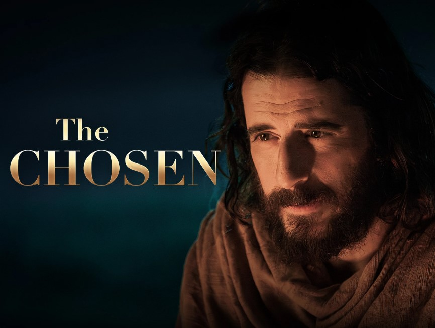
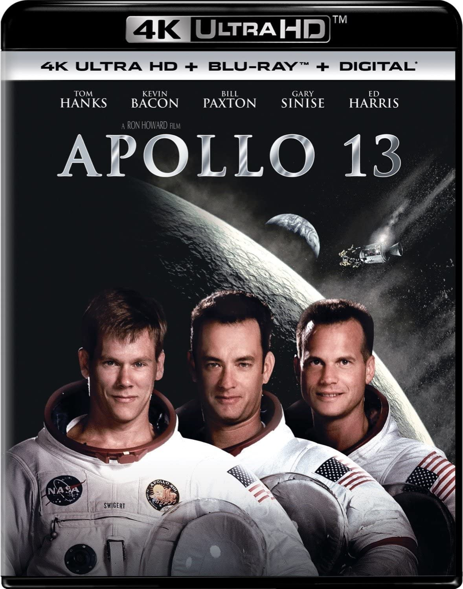
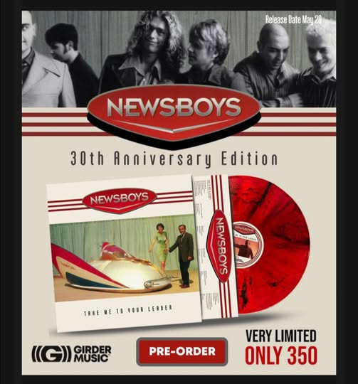
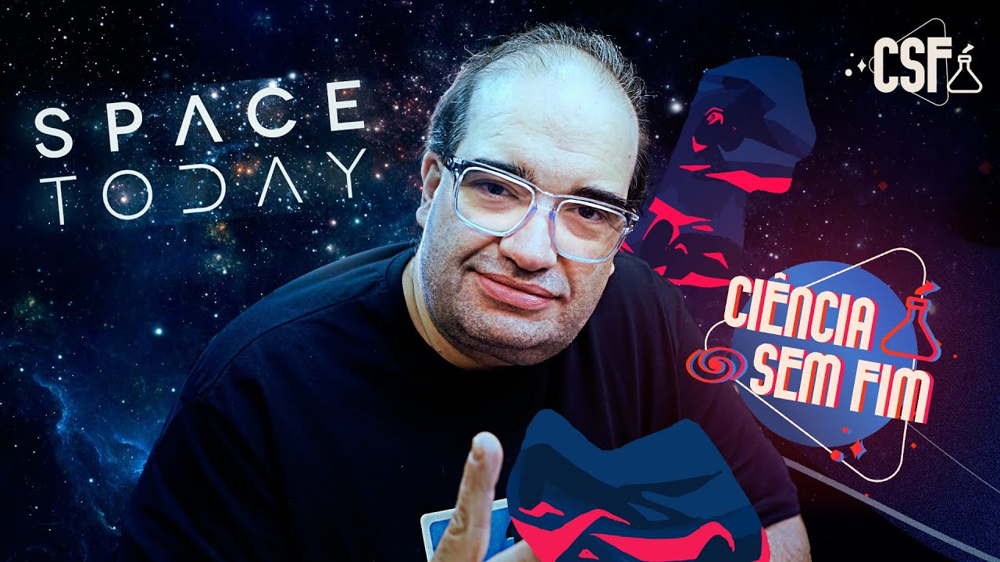
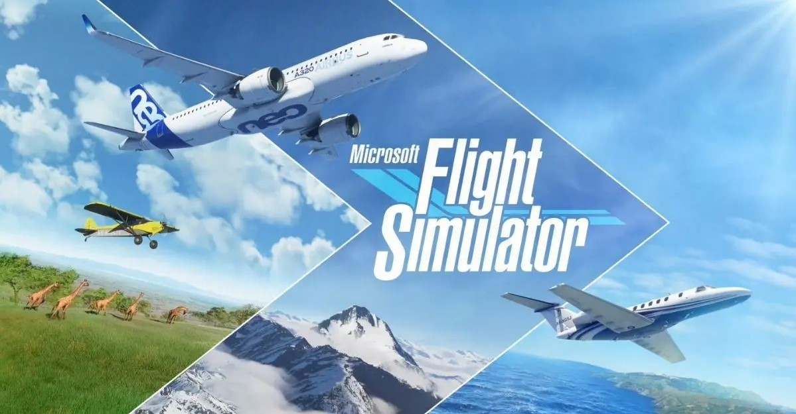
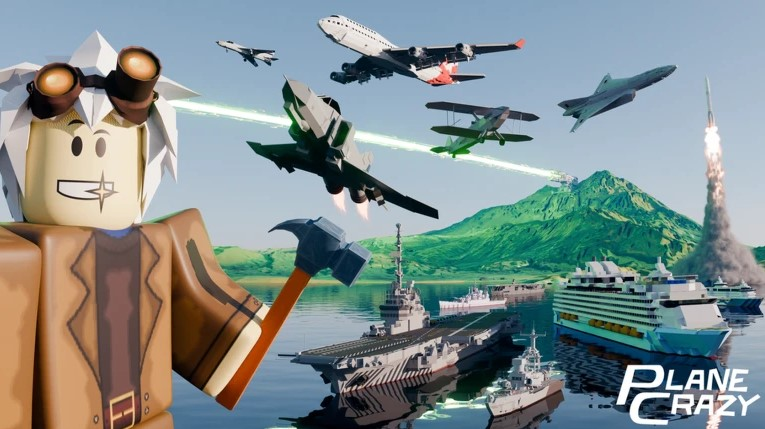

Filmes e Séries


Jesus é uma personalidade que me fascina e me intriga. Quanto mais conheço, mais percebo que realmente ele e Deus são uma pessoa só. Apollo 13 retrata a resiliência e auto controle ao extremo, em troca da própria sobrevivência
Música e Podcasts


Sempre ouvindo um bom clássico no fone de ouvido, ou podcasts do Sergião dos foguetes, durante o expediente na bancada
Games e Tecnologia


Não tenho tido muito tempo para os simuladores realistas, pois o tempo que posso me dedicar a entretenimento, fico com meu filho nos simuladores mais simples do Roblox. Mesmo assim, a diversão não falta